GraphXR 2.15.0 Release Notes Release Date: November 14, 2022 The GraphXR 2.15.0 release includes new features and user interface design, and new and updated extensions. In GraphXR, click About at the bottom left of the project space, then click on the current release tag to display a digest of features introduced in current and past releases. New Features 2.15.0 Show the nodes in a collection in a Table. You can now select a collection node and display a table of its contents. Select the collection node, open the Table panel, and click the category of the nodes in the collection. Also, in-graph search and filtering now operates on the nodes in a collection. 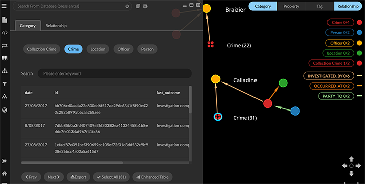 Animated Filters. Filters include an auto-play function, which enables animated display of data by numerical, lat-long, or date-time properties. The animation can be set to loop continuously over a specified time interval. This enables creation of animated views of data, which can be shared through an iframe. 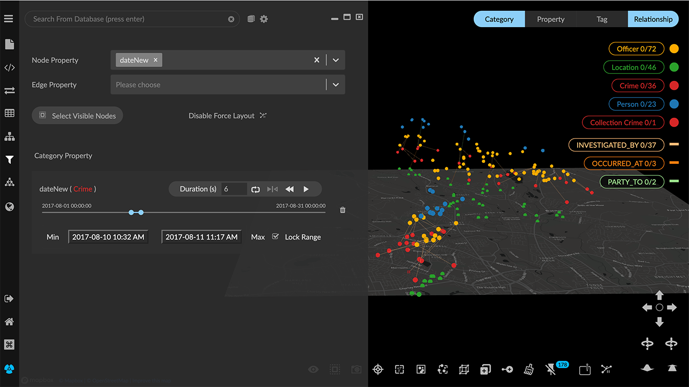 Improved Data Views. A maximum of 100 data views (increased from just 10) can be created. Data views can be shared individually with any user. In the Project>Data tab and views list, click the Share icon to open the shared view. Its url can be copied and shared with any user. 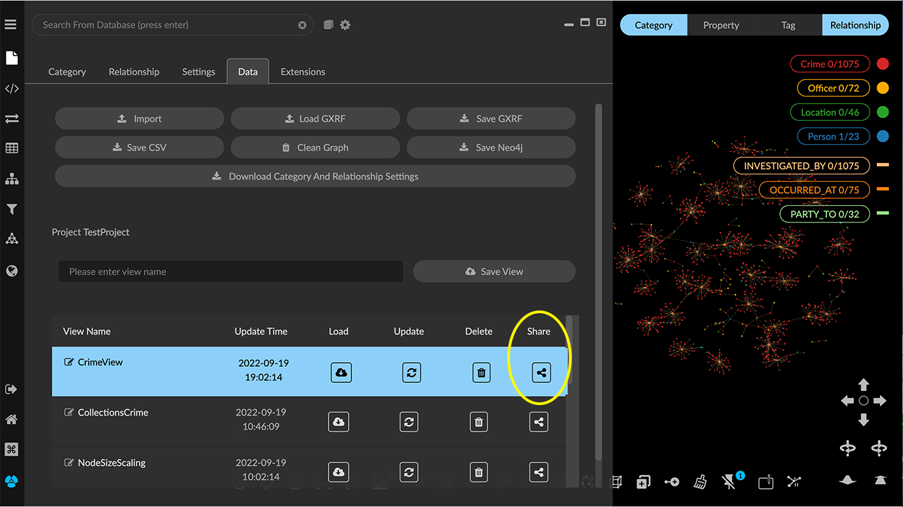 Project UI Configuration. User interface elements can now be configured from within the project. The configuration UI also enables display of icons to access extensions on the left menu below the panel icons. In the Project>Settings tab, click UI Configuration (located at the bottom of the Settings panel). 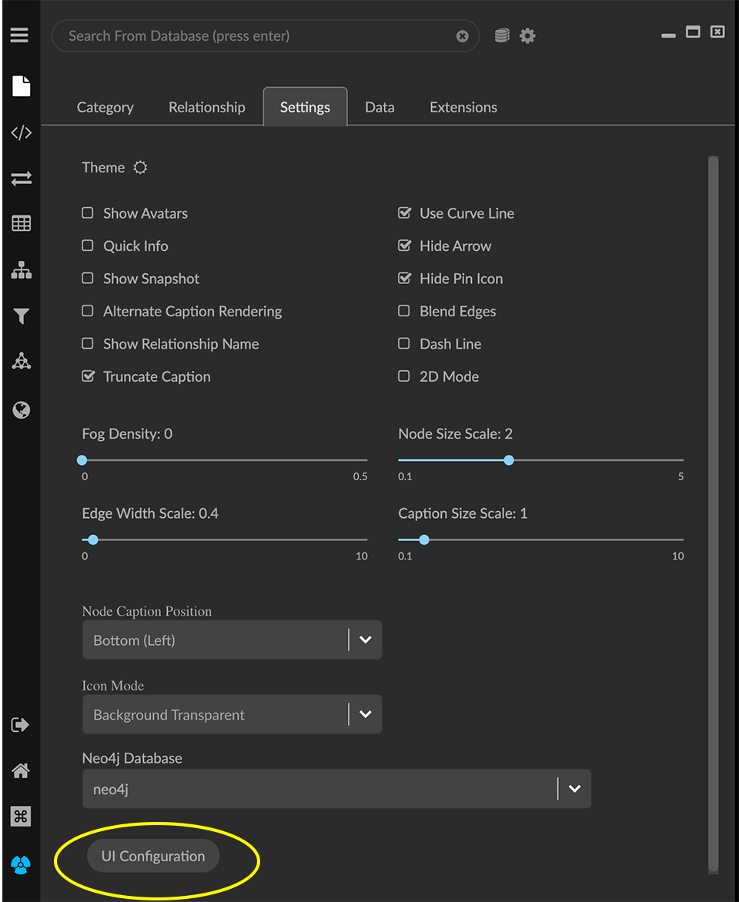 The UI Configuration dialog is displayed. Click to set the visibility of UI elements (visible to everyone, only to project users, or hidden from everyone), and click Save to return to the project space. 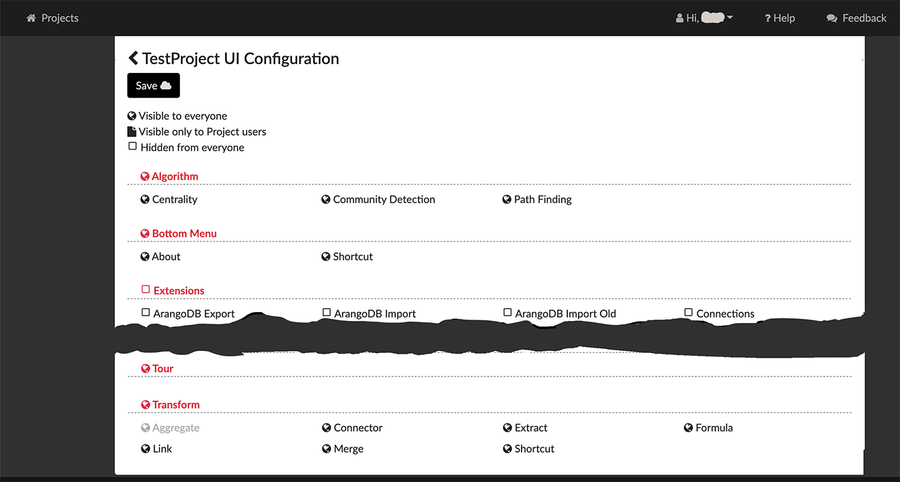 Categories and Relationships can be re-named directly using the Enhanced Table. Open the Table panel, click to select the category and click to open the Enhanced Table. Double-click the category (or relationship) label to edit it, and click return. The label is immediately updated in the graph. 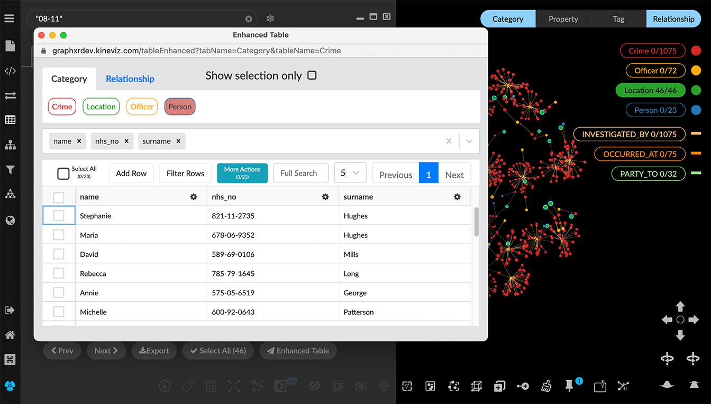 For Enterprise clients, Project Templates can be configured at the server level, such that Category settings, node sizes, and more are already set. Templates are created and edited by admin users on the server through /admin and are available for selection when a non-admin user creates or edits a project. Multiple templates can be configured. 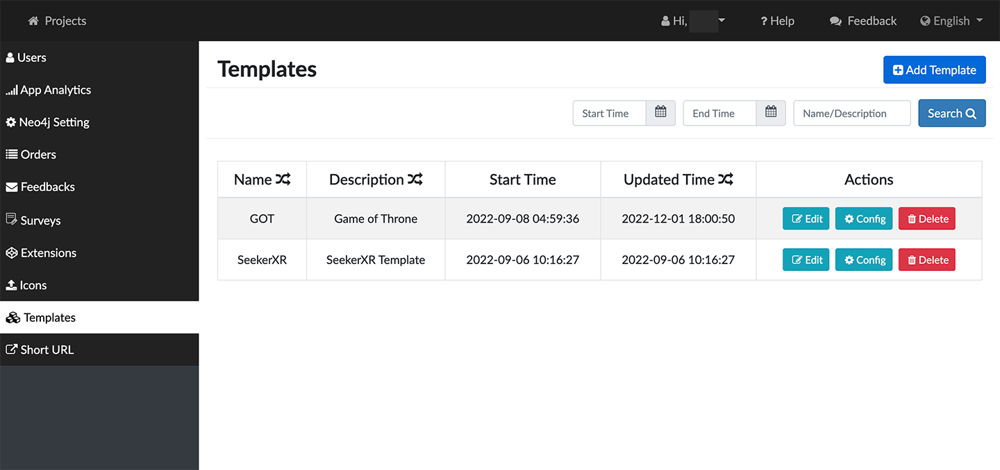 A template enables the administrator to: Define the initial project settings Define styling for a predefined list of Categories and Relationships. ** Remove unneeded UI elements and add UI buttons on the left menu to access selected extensions. + image::/V2_15_08_ProjectTemplates_Configure.png[,520,420,role=text-left] In the Project>Data tab, the Download Category and Relationship Settings button saves settings from an existing project as a .json file which can then be imported into a template. 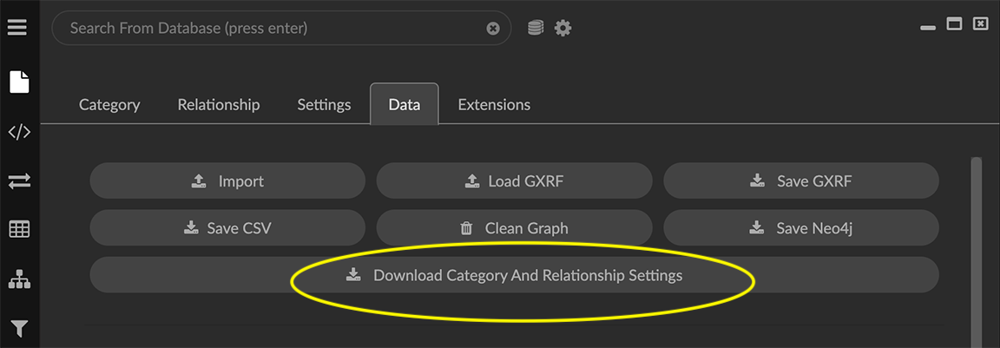 Usability Improvements. Improved keyboard/mouse/trackpad navigation and selection. To move any selection of nodes, simply left-click+drag. To center a node in the project space, hold c and double-click the node. (Simply double-clicking a node displays its Information window). To zoom in or out quickly, use Alt (or Option) +mouse (or trackpad) scroll*.* To select the nodes or edges of more than one Category or Relationship, or the nodes or edges with specific property values, Ctrl + left click the items in the Legend. __ The contextual toolbar includes the additional Quick Layout icon, which displays a menu to apply one of the basic geometric layouts in one click (Line, Grid, Cube, Circle, Spiral, and Spring), or the Tree or Ring layouts to a selection (or to all the data). 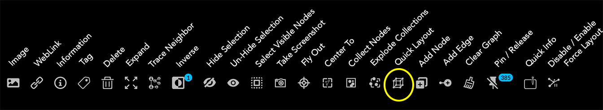 The layout can be adjusted using Expand or Contract menu items. 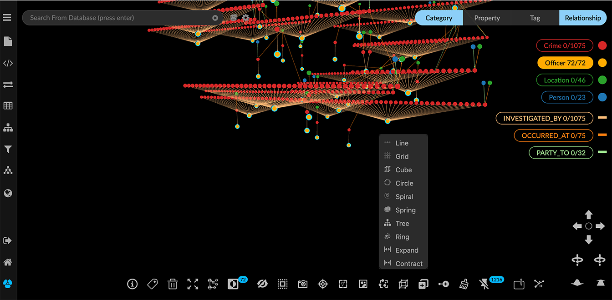 Quick layouts may be adequate for initial exploration. Full features to display data by property value and to position data in the project space remain available in the Geometric layout panel. In the Layout > Geometric tab The nodes in Ring or Tree layouts can be arranged by a property value. 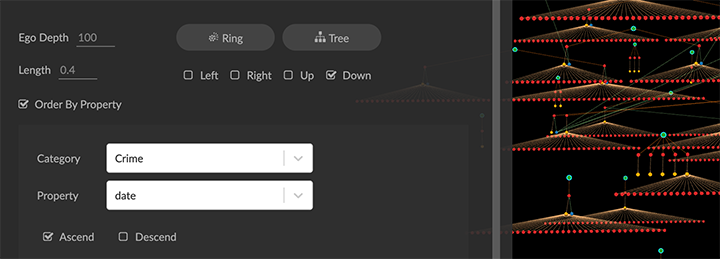 In the *Project>_Category tab A Clean button lets you remove a category not in the currently connected database, or, for a project not connected to a database, a category not in the data currently in the graph. 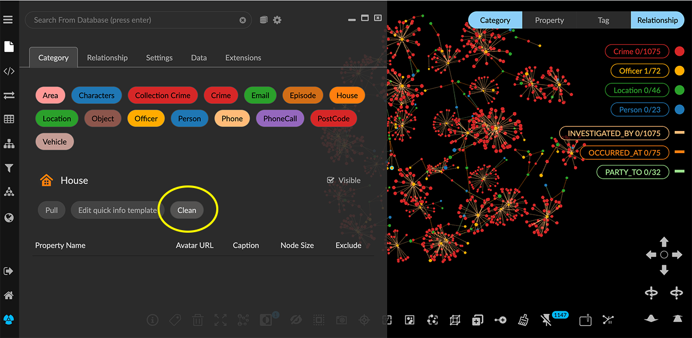 In the Project>Settings tab A 2D Mode checkbox reduces rendering to the 2D plane. When 2D mode is enabled, the Z Compress slider in the Layout>Force tab is hidden, since a Z-axis is not rendered. 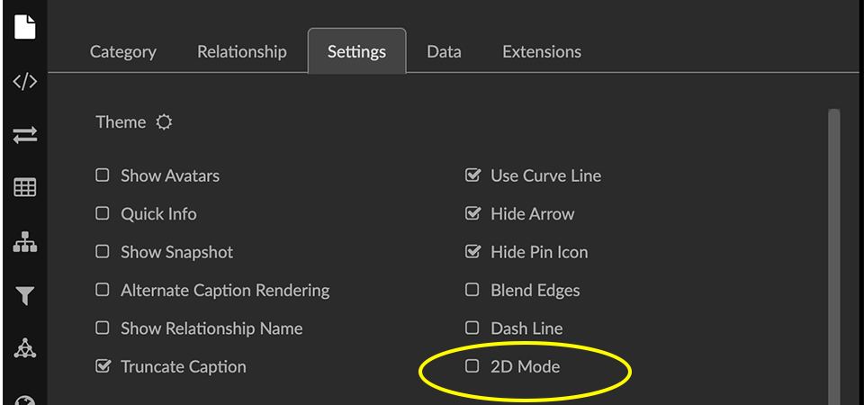 The Neo4j Database menu that enables selection of a different database from within a project appears only when the project is connected to a Neo4j database. 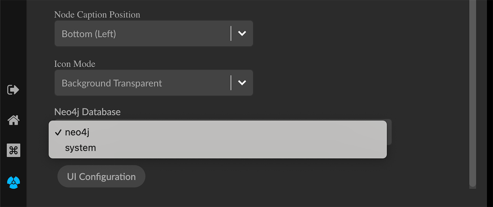 The UI Configuration button is added. Removed 2.15.0 None Extensions 2.15.0 Visual Query Builder. Build Cypher queries using no-code building blocks. Category blocks include plus + icons to add a relationship and category block to a query in one step. This makes it faster and easier to modify a visual query. A single category block can now include a connection to more than one relationship block. 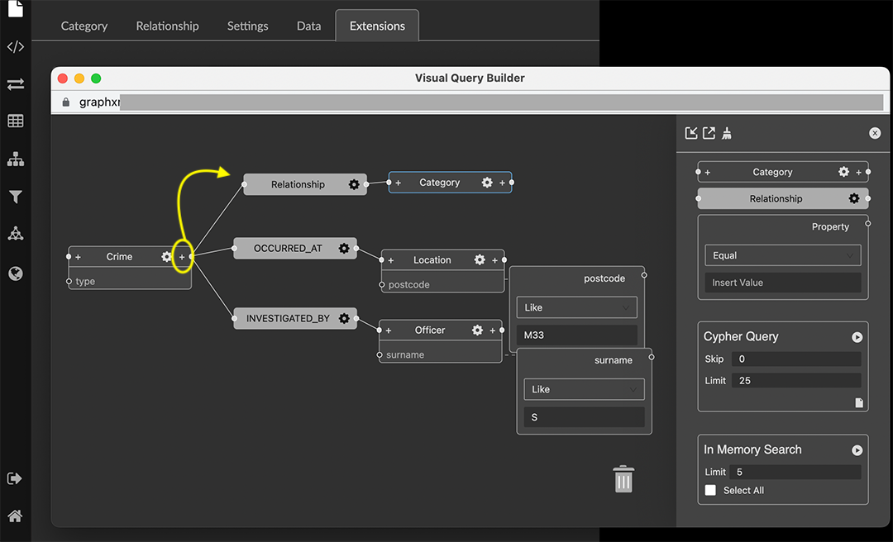 Grove (beta-release). Observable-inspired in-app javascript notebook. Continuing UI and API development For Enterprise subscriptions, limited release extensions are available for connecting to specific external data sources, or importing data from RDBMS, document, or mixed data sources. Supported Environments 2.15.0 WINDOWS, MAC OSX, AND LINUX CLOUD, PRIVATE CLOUD, AND ON-PREMISES DATA HOSTING OCULUS RIFT, HTC VIVE, AND WINDOWS MIXED REALITY The GraphXR client runs best in Google Chrome; works in Safari. Compatibility with other browsers may vary. The GraphXR client includes beta support for Virtual Reality (VR) hardware in the Google Chrome browser via WebXR. GraphXR Cloud supports local and cloud storage. In addition, GraphXR Enterprise is available via on-premises or private cloud deployments. For more information, please contact Kineviz.